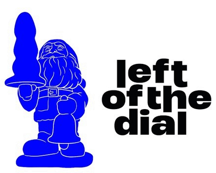

Jouw eigen keuzes, met de looptijd tussen elke zaal en wat je eventueel mist. Waar je twijfelde staan de opties naast elkaar.
Oranje = je mist een stukje van een set of moet eerder weg. Rood = meer dan 15 minuten lopen.
Genres zijn samengevat uit de omschrijvingen van het festival. “Klinkt als” komt van de “For fans of”-regel op de bandpagina’s van leftofthedial.nl.
Looptijden zijn schattingen. Eindtijden van Mindsigh (vrijdag), Babe Haven en Tooth ken ik niet precies; ik ga uit van 40 minuten.